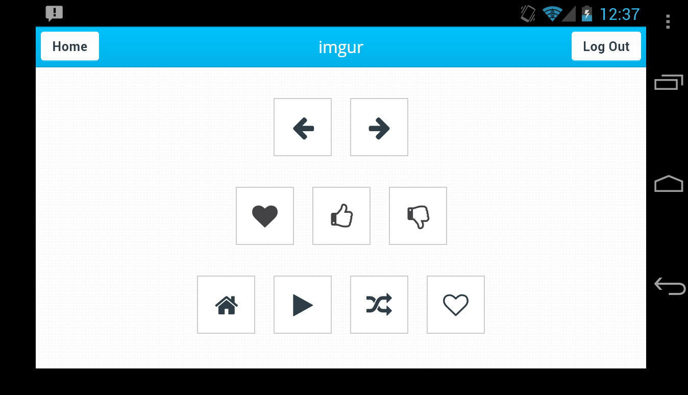

Mote.io
JQuery

Use your phone as a remote, now for imgur! Ever wanted to browse imgur with your friends, or by yourself, but get tired of continiously pressing the right key? Now you can just use your phone as a remote, and browse with comfort.
My first adventure into Open Source, at HackNY I listened to an API talk by Ian Jennings about his app Mote.io. He said that at least four of the different remotes for the app were made from Open Source development, some even at hackathons.
Our actual hack for the hackathon ended up not taking too much time, and I decided to spend some time working on a side project. I looked into how making a new remote worked, and I decided this would be a fun project to do, teaching me JQuery in the process. I first started working on a stumbleupon remote, but then realized that stumbleupon doesn't really lend itself to being navigated by simple clicks.
I decided to make a remote for imgur. I spent a few hours delving into imgur, figuring out how it worked, and learning Ian's Mote API. After some experimentation, exploration, and user testing, I made a remote that I felt could handle every capability of imgur. I polished up my code, and submitted a pull request to the main repo.
My fork repo can be found here.